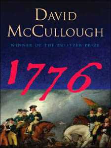

1776:America and Britain at War
This article is about the book by David McCullough. For the Broadway musical and film adaptations of the book by
Peter Stone, see 1776 (musical) and 1776 (film). For other uses, see 1776.
1776 (released in the United Kingdom as 1776: America and Britain at War)[1] is a book written by David McCullough,
published by Simon & Schuster on May 24, 2005. The work is a companion to McCullough's earlier biography of John
Adams, and focuses on the events surrounding the start of the American Revolutionary War. While revolving mostly
around the leadership (and often indecisiveness) of George Washington, there is also considerable attention given
to King George III, William Howe, Henry Knox, and Nathanael Greene. Key Revolutionary War battles detailed in the
book include the Battle of Dorchester Heights, the Battle of Long Island, and the Battle of Trenton.[2] The
activities of the Second Continental Congress and the signing of the Declaration of Independence are treated in less
detail, as the focus is on military rather than political events. The book includes multiple pages of full color
illustrations, including portraits and historical battlefield maps made by British engineers at the time.
Illustrated Edition
1776: The Illustrated Edition was released on October 2, 2007. The Illustrated Edition contains 140 images and
thirty-seven removable replicas of
source documents. More than three dozen source documents—including a personal letter George Washington penned to
Martha about his commission, a note informing the mother of a Continental Army soldier that her son has been taken
prisoner, and a petition signed by Loyalists pledging their allegiance to the King—are re-created in uniquely
designed envelopes throughout the book and secured with the congressional seal.
The text closely mirrors the original book, but omits or summarizes some parts deemed too long. The Illustrated Edition
comes with its own protective slipcase, decorated with The Capture of the Hessians at Trenton, December 26, 1776 by
John Trumbull and has a "fake watermark" of the Great Seal of the United States on the back and front. The book is
plain covered in blue with the golden embossed numbers "1776".
Reception
1776 was selected as part of the 2005 and 2006 CSAF Professional Reading Program.[3] 1776 is also a New York Times and
Amazon bestseller.

Author : David McCullough
Country : United States
Language : English
Subject : History/U.S. History/American Revolution/Military History
Genre : Non-fiction
Published : May 24, 2005